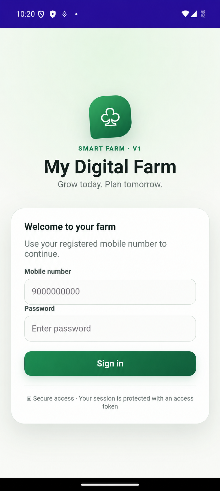
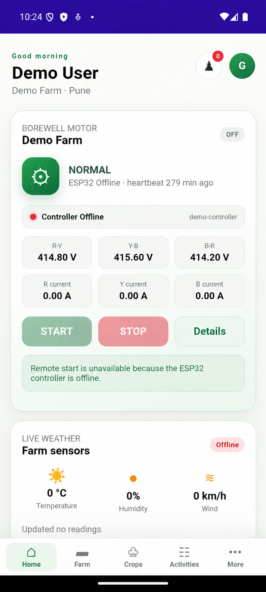

01
Mobile
.NET MAUI · Xamarin.Forms · Android · iOS
Available for mobile development opportunities
I’m Gaurav Patil, a software developer focused on .NET MAUI and Xamarin. I create reliable, offline-first Android and iOS applications for field teams and enterprise workflows.
01 / ABOUT
My work sits at the intersection of clean mobile experiences and dependable field operations.
I develop cross-platform mobile applications using C#, XAML, MVVM, .NET MAUI and Xamarin.Forms. My focus is on responsive interfaces, robust REST API integration, offline storage and background synchronization.
I have led Xamarin-to-.NET MAUI migration work, implemented high-speed barcode and HID scanning, and managed production releases through the Google Play Console.
01
.NET MAUI · Xamarin.Forms · Android · iOS
02
C# · XAML · MVVM · Custom controls
03
REST APIs · JSON · SQLite · Offline sync
04
Visual Studio · Git · Postman · Play Console
02 / EXPERIENCE
Venkateswara Hatcheries Private Limited
WAi Technologies
03 / SELECTED WORK
A self-built proof of concept inspired by real industrial farm operations. I designed the mobile application to bring farm details, controller health, three-phase electrical readings, live weather, ESP32 connectivity and remote motor controls into one workflow.
An employee self-service solution with secure API integration, role-based access and responsive mobile workflows.
SELF-BUILT POC · PRODUCT SCREENS
Built around practical farm workflows, this POC presents farm and controller details, electrical readings, live weather, remote motor controls and controller-offline safeguards.


EDUCATION
Information Technology
Pravara Rural Engineering College, Loni · 70.80%CERTIFICATION
AZ-900
Cloud concepts, Azure services and governance fundamentals04 / CONTACT
Have a mobile app opportunity or a product problem worth solving? I’d be glad to talk.